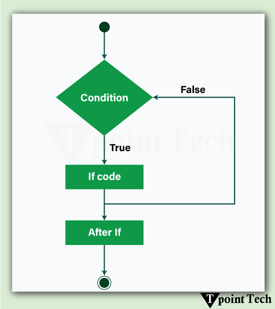
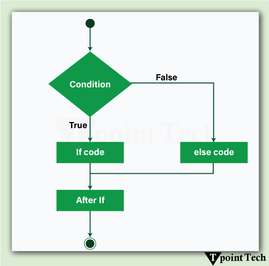
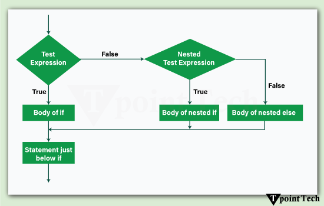
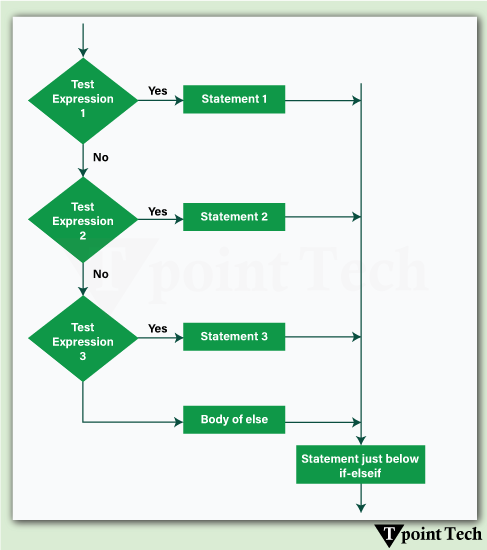

Decision-making functions as an essential programming language component for most modern languages. Programming languages enable programs to run specific program sections after satisfying specific conditions.
Conditional Statements are the statements that allow a program to make decisions based on conditions. These statements enable the execution of different blocks of code relying on whether a condition is True or False.
Types of Conditional Statements in Python
Python provides support for the following types of conditional statements:
- if statement
- if-else statement
- Nested if statement
- if-elif-else statement
Let us discuss these conditional statements in detail.
if Statement
Programs execute the code inside the if block when the condition evaluates as True.
This represents the simplest decision-making construct. Programs can determine dynamic responses through the if statement because it activates specific actions based on defined conditions.
Syntax:
if condition:
# Code to execute if condition is True Let us consider a simple example showing the implementation of if statement in Python:
Example 1
# initializing the age
age = 18
# if statement: checking if the given age is greater than or equal to 18
if age >= 18:
# printing a message
print("You are eligible to vote.") # This executes because the condition is True Output:
You are eligible to vote.Through an if statement the provided Python code determines voting eligibility for individuals. The program evaluates the age condition against 18. Execution of the indented block occurs because age is 18 thus making the condition True which results in printing "You are eligible to vote." When age falls below 18 the condition becomes False which causes the print statement to omit. Python requires indentation because it serves to mark the sections of code that will execute whenever the specified condition meets the requirement.
Let us now consider another example, where the program will return a message according to the entered age of the user:
Example 2
# asking age from the user
age = int(input("Enter your age: "))
# multiple if blocks
if age < 18: # checking if age is less than 18
# printing a message
print("You are not eligible to vote")
if age >= 18: # checking if age is greater than or equal to 18
# printing a message
print("You are eligible to vote.")
if age >= 21: # checking if age is greater than or equal to 21
# printing a message
print("You are allowed to consume alcohol in some countries.")
if age >= 60: # checking if age is greater than or equal to 60
# printing a message
print("You are eligible for senior citizen benefits.")
if age >= 80: # checking if age is greater than or equal to 80
# printing a message
print("You are a very senior citizen. Take extra care of your health.")
Output:
# Output 1:
Enter your age: 20
You are eligible to vote.
# Output 2:
Enter your age: 65
You are eligible to vote.
You are allowed to consume alcohol in some countries.
You are eligible for senior citizen benefits.Multiple independent if statements appear within the Python program to verify various conditions according to the user-entered age. An if statement works separately from other if statements which enables two or more conditions to satisfy simultaneously.
The if statements function independently of one other because they remain isolated from each other. The program becomes dynamic and flexible because the execution includes all corresponding code blocks whenever multiple conditions become true.
if…else Statement
Programming contains the if…else statement as its core element for making decisions in code execution. One block of code executes through the if statement when conditions prove true, but a different block activates with conditions evaluated false.
Different actions will follow according to different conditions because of this structure. The if block examines a condition while true results activating the block of code; otherwise, the else block executes.
The structure of if…else statement works as a valuable tool for managing two possible results from a condition which enhances the program flexibility and responsiveness. A programming language requires either indentation or brackets to display code blocks in a clear manner.
Syntax:
Here is the syntax for the if...else statement
if condition:
# Code to execute if condition is True
else:
# Code to execute if condition is False Let us a simple example showing the implementation of the if...else statement in Python:
Example
# asking age from the user
age = int(input("Enter your age: "))
# if-else statement: checking whether the user is eligible to vote or not
if age >= 18:
# if block
print("You are eligible to vote.")
else:
# else block
print("You are not eligible to vote.") Output:
# Output 1:
Enter your age: 20
You are eligible to vote.
# Output 2:
Enter your age: 16
You are not eligible to vote.The Python program utilizes an if...else construct to verify voter eligibility status of users. Before proceeding the program obtains an integer age from the user. The if statement confirms whether the entered age exceeds 18 years. The program displays "You are eligible to vote" when the specified condition turns out true. Because the condition evaluates to false which indicates an age lower than 18 years old the program proceeds to display "You are not eligible to vote." Through this method the program generates the proper response whenever a user fits into either condition.
The if...else construct serves programs that need decisions between two outcomes because it enables proper output selection according to user input. A coding error will occur in Python if you do not use indentation to specify your code blocks.
Nested if…else statement
A nested if…else statement places an if…else block within both if statements and else statements. A program is then able to perform advanced decision-making through this structure by allowing multiple tests of conditions.
The first step evaluates the outer if condition. The nested control block executes the if or else sections depending on newly introduced conditions when the first if condition returns true. The block serves efficient decision-making operations that use various conditions.
In Python, the correct indentation stands as the main indicator of nested blocks although other coding languages use curly braces {} to define these structures. The if…else block within an if…else block simplifies execution in applications involving user authentication and grading systems and order processing.
The use of conditional blocks requires caution since their excessive application can generate code that becomes unreadable but also remain difficult to maintain code clarity and code efficiency.
Syntax:
Here is the syntax for a nested if...else statement
if condition1:
if condition2:
# Code to execute if both condition1 and condition2 are True
else:
# Code to execute if condition1 is True but condition2 is False
else:
# Code to execute if condition1 is False Programs can check multiple conditions in an organized order through a nesting structure of if else statements.
First, condition1 is evaluated. The program enters the first if block because condition1 evaluates as true before checking condition2. Both the first and second condition evaluations lead to program execution of their associated blocks. The program will execute the else block within the first if when condition2 proves to be false.
The outer else block runs directly when condition1 remains false after the initial evaluation. The practice delivers practical benefits for determining decisions that rest on multiple preconditions like user verification and complex business rule processing or multiple structured constraints. Every Python program requires correct indentation to ensure clear program representation.
Let us consider an example showing the implementation of the nested if…else statement in Python.
Example 1
# asking user to enter password
password = input("Enter your password: ")
# nested if-else statement: checking whether the password is strong or not
if len(password) >= 8: # checking the length of the password
# outer if block
if any(char.isdigit() for char in password): # checking if the password consists of any numeral value
# inner if block
print("Password is strong.")
else:
# inner else block
print("Password must contain at least one number.")
else:
# outer else block
print("Password is too short. It must be at least 8 characters long.") Output:
# Output 1:
Enter your password: secure123
Password is strong.
# Output 2:
Enter your password: password
Password must contain at least one number.The program evaluates user password strength through a conditional if else structure nested inside another if else block. As a first step the program requires a password as input from the user. The program first examines whether the length of the entered password is 8 characters or more through this outer if statement. The inner if statement uses the any() function to validate that the password has a numeric digit when run successfully. The program displays "Password is strong" when a digit exists in the input. The program displays "Password must contain at least one number" through the nested else clause when a password does not contain at least one number. The outer else section executes because the entered password consists of fewer than 8 characters.
Through this evaluation method the system examines both password length requirements as well as password complexity to ensure proper security standards. Indentation across the codebase supports easy reading in Python programming language.
Let us see another example showing the working of the nested if…else statement in Python:
Example 2
# asking user to enter their marks
marks = int(input("Enter your marks: "))
# nested if-else statement: checking if the user passed with distinction or not
if marks >= 40: # checking if the user got marks greater than or equal to 40
# outer if block
if marks >= 75: # checking if the user got marks greater than or equal to 75
# inner if block
print("Congratulations! You passed with distinction.")
else:
# inner else block
print("You passed the exam.")
else:
# outer else
print("You failed the exam. Better luck next time.") Output:
# Output 1:
Enter your marks: 80
Congratulations! You passed with distinction.
# Output 2:
Enter your marks: 35
You failed the exam. Better luck next time.A nested if else structure in the program establishes passing or failing criteria which depends on student marks. The program starts by accepting student marks as an integer value. First the outer if clause examines if the marks exceed 40 which indicates passing status. The program uses the inner if condition to confirm if marks exceed 75. If so, it prints "Congratulations! You passed with distinction." The code inside the inner else block runs when the marks are higher than 40 but less than 75 so the message "You passed the exam" appears. When student marks fall below 40 the outer else statement activates to display "You failed the exam. Better luck next time." The structured system functions to split student academic results into separate categories for better assessment.
if…elif…else Statement
A program requires the if…elif…else statement to evaluate sequential conditions for multiple tests. A program can check several conditions in succession to locate a condition which produces a True outcome.
The first step checks the if condition because it determines if the corresponding code block needs execution before moving to the next elif conditions. An if statement will be evaluated when all previous conditions prove false. A match of any elif condition results in program execution of its associated code thus skipping all following conditions. The execution path ends at the else block whenever none of the conditions are satisfied. The decision structure provides efficient outcome management for software with numerous possible results.
Output:
Here is the syntax for an if...elif...else statement
if condition1:
# Code to execute if condition1 is True
elif condition2:
# Code to execute if condition2 is True
elif condition3:
# Code to execute if condition3 is True
else:
# Code to execute if none of the conditions are TrueMultiple conditions within a program requires an if…elif…else structural evaluation process.
The program first checks condition1. When one of the if condition meets the truth requirement, then the attached code runs before breaking off from the entire set of conditions.
The program proceeds to evaluate condition2 only after condition1 becomes false. The code block for condition2 will execute when it meets the truth criterion.
The program relocates to check condition3 only when both condition1 and condition2 prove to be false. By default, the else block runs when all previous conditions turn out to be untrue.
The structure prevents decision-making complexity by executing only single block from multiple if statements when the first condition becomes true.
Let us consider an example showing the implementation of the if…elif…else statement in Python.
Example 1
# asking user to enter temperature
temperature = int(input("Enter the temperature in Celsius: "))
# if-elif-else statement: checking temperature
if temperature >= 30: # if temperature is greater than or equal to 30 deg
# if block
print("It's a hot day.")
elif temperature >= 20: # if temperature is greater than or equal to 20 deg
# elif block
print("The weather is warm.")
elif temperature >= 10: # if temperature is greater than or equal to 10 deg
# another elif block
print("It's a cool day.")
else: # if temp is less than 10 deg
# else block
print("It's a cold day.") Output:
# Output 1:
Enter the temperature in Celsius: 35
It's a hot day.
# Output 2:
Enter the temperature in Celsius: 22
The weather is warm.The program uses an effective system which groups temperature zones, so a single condition runs for provided inputs. The evaluation procedure follows a sequence to make better decisions which eliminates avoidable tests. This program helps users obtain weather conditions immediately through its applications which depend on weather conditions. The program allows future development to integrate detailed temperature categories and specific alert messages. Python's syntax with indentation helps maintenance teams understand the program logic more easily. Through its form structure the system enables applications to automate weather alerts and clothing recommendations and climate-based planning. Temperature threshold modifications allow this program to operate across various climate zones thus defining its status as a flexible practical forecast system.
Here is another example of an if…elif…else statement that categorizes exam grades based on marks.
Example
# asking user to enter their marks
marks = int(input("Enter your marks: "))
# if-elif-else statement: grading marks
if marks >= 85: # if marks is greater or equal to 90, printing A
print("Grade: A")
elif marks >= 65: # if marks is greater or equal to 80, printing B
print("Grade: B")
elif marks >= 50: # if marks is greater or equal to 70, printing C
print("Grade: C")
elif marks >= 33: # if marks is greater or equal to 60, printing D
print("Grade: D")
else: # if marks is less than 90, printing F
print("Grade: F") Output:
# Output 1:
Enter your marks: 95
Grade: A
# Output 2:
Enter your marks: 64
Grade: CThrough its if…elif…else structure the program receives student marks followed by grade assessment. It first converts the input into an integer. The first conditional statement verifies whether the marks reach or exceed 85 points. The program displays "Grade: A" when the statement evaluates to true. It will display "Grade: B" if the marks exceed 65 while failing the previous if condition. Under the second elif statement the code verifies whether the student received marks between 50 and 64 to display "Grade: C." The program uses another elif condition to evaluate marks that exceed 33 before printing "Grade: D." The program executes the else block and displays "Grade: F" if all previous conditional criteria fail to match. The structure allows the program to match one single condition and evaluate the appropriate grade according to mark levels.
Conclusion
Decision-making forms an essential programming principle because it allows programs to activate specific code through established conditions. The programming language contains multiple conditional statements composed of if, if…else, nested if…else and if…elif…else structures to execute conditions in an efficient manner.
Python requires proper indentation because it enables readable code and prevents syntax errors in the program. Program dynamicity together with interaction become possible through the use of decision-making statements which enhance code efficiency. Programmers who learn these programming principles develop the ability to construct efficient logical structured applications for real-life systems which automate multiple computational procedures accurately.